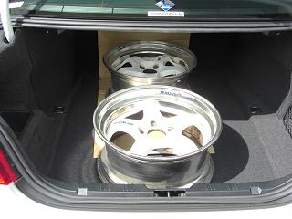 記載変更にしろ、構造変更にしろ、タイヤのはみ出しや光軸やサイドスリップなどの「車検」ラインを通す必要がある。 これらを全てパスした後に、重さや寸法、改造箇所を審査するために新規ラインを通す。 Mゴロー号のフロントホイール、しかするとアウトかも・・・ ってぐらいツライチだったので。。 念のためtake-Mのtakeさんにホイールをお借りし、記載変更の為のアドバイスをいただいたm(__)m しかし、、ブレーキに干渉して装着できず。。 「あの手を使うしかない」と。 そのあの手とは、自動車部品量販店に売っているフェンダーモール。 フェンダーにモールを貼るのだ。 この時に、つばめさんやmedama1goさんに教えてもらった。 モールの幅は、左右１センチづつまではOKだそうだ。しかし、量販店へ行くと下品なメッキのモールばかり。。 いくらその時だけとはいえ、メッキモールをフェンダーに貼るなんて。。。 個人的に許せないので、貼った画像は割愛（笑
|
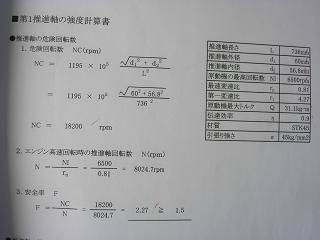 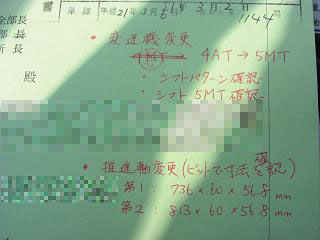 変更を申請するにあたり、使用した部品の一覧や強度計算などの書類が必要となる。 強度計算なんてどうしたら良いの・・・ 他にもわからないことだらけ・・・orz そこで、DIYでＭＴ化したSIGさんに尋ねると、アドバイスと共に快く資料を譲っていただけた。 ありがとうございましたm(__)m それらをまとめていくと全部で20枚になった。 その資料を陸運局へ提出し、書類審査を受ける。 ４日後に書類審査OKの連絡が来た。 書類審査でOKが出れば、いよいよ陸運局に車を持ち込み実車確認だ。 書類審査OKの連絡から実車確認を受けるまでの期間は、特に決められていない。 予約を取って実車確認当日、提出した書類を受け取って必要用紙に印紙2100円分を貼り検査ラインへ。 右のきみどり色のが申請書類の表紙 確認事項が赤で書いてある。
|
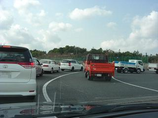 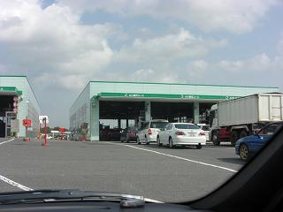 検査ラインへ並ぶ。 この間に検査員がやってきてワイパーや灯火類、ホイールボルトの緩みなどをチェックされる。 回転部分突出（タイヤはみ出し）に「確認」と書かれた（。。） もう、ドキドキだ。
|
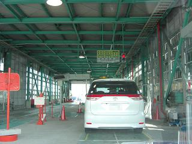 どこで何をしたらいいのか分からないままテストコースへ 戸惑っていると、検査員がやってきて教えてくれた。 ブレーキ制動テスト、スピードメーターテスト、サイドスリップ、排気ガス、下回り検査と順調にパス＾＾ しかし、、光軸でアウトに。。 このあと苦難を乗り越え4回目で受かる（笑 前日に光軸合わせてもらったのになぁ。。
|
その苦難とは・・・ 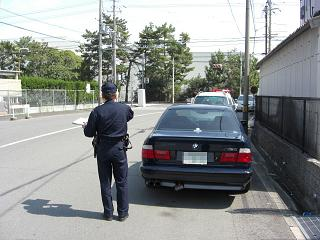 光軸テストでアウトになり。。 テスター屋に光軸を合わせてもらって、陸運局へ戻る時の信号待ちで後ろから追突される。。 何でこんな時に・・・（‐‐； ヘコみましたよ。（バンパーも気分も） 諦めて帰ってやろうかってぐらいに（笑 事故の処理をしてる間に陸運局は昼休みに。。 昼休みが終わるまで１時間待つorz この後、２回テスター屋へ光軸を合わせに行くも、事故を見ていたようで無料で調整してくれた （ラッキーなのかどうなんだか（笑）） 光軸でアウトになった原因は、Lo側からの光の漏れだった。 |
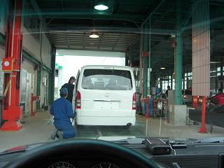 朝9時から来て、通常の検査が終わった時点で午後3時。。 （光軸で４回並び時間がかかったのだ（笑）） 次は、全長、全高、全幅、車重をはかり、改造箇所のチェックに新規ラインへ。 前の車は「ここがダメ」「ここも」「ここも！」といじめられていた。 これを見て更にビビる。。 写真の左にあるオレンジ色の機械で全長、全高、全幅を測るようだ。
|
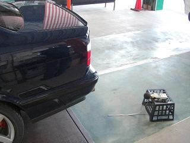 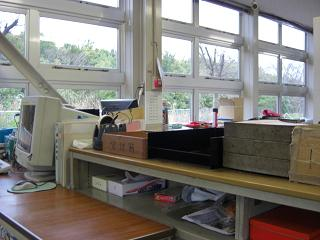 いよいよＭゴローの番だ。 ドキドキしながら車を前に進め、「記載変更です」と書類を渡す。 検査員：「はいはい、記載変更ね」 検査員：「シフトのチェックしまーす」 検査員：「このシフト気持ち良いねー」 ・ ・ ・ ←BMW話に花が咲く（笑 ・ ・ 下回りの検査もすることなく、音量とタイヤのはみ出しチェック、シフトのチェックで終わった＾＾ 思っていたよりすぐに終わった。 検査が終わると、検査員が必要事項を用紙に書いてくれる。 右の画像がその待合室 書いてもらった書類を受け取り、受付へ書類を提出する。この時点で午後４時。。 交付まで待ち時間「1時間30分」と表示が。。。 しかし、30分ぐらいで名前を呼ばれる。（この時まで記載変更だと思っていた。） 行ってみると「記載変更ではなく構造変更になる」と。。 なんでやねん！と思いつつ、いったん書類を受け取り改造申請の受付へ質問しに。 すると、Ｍゴロー：「これ、記載変更じゃダメなんですか？」 検査員：「高さが変わっているから構造変更ですね」 と、さらに続けて、 「MTの交換によって車高が変わったんやと記載変更で大丈夫やけど バネ交換してるでしょ？これだとダメなんです」 Ｍゴロー：「±4センチは許容範囲じゃないんですか？」（差は－3センチだった） 検査員：「この場合はダメです。」 こんな会話だったと思う。 なぜ記載変更にこだわりたかったのかというと。。 Ｍゴロー号は、昔の「33ナンバー」でこれをどうしても残したかったのだ。 Ｍゴローの認識では、 記載変更は、改造をして車検が残っている場合にナンバーを切らずに車検書の記載を変更し 構造変更は、いったんナンバーを切って新規で車検 こんな認識だった。 つまり、構造変更だと新しいナンバーになってしまうと思っていた。 しかし、聞いてみると車検時だと継続で構造変更ができるとか。 じゃあ、構造変更でいいかぁ。。ってことで構造変更になりました。 |
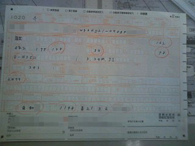 ちょうど車検の時期でもあり、構造変更だと車検を受けないとダメなので。。 重量税（50400円）や自賠責（22470円）の支払いをして書類と共に提出しないといけない。 が、当然そんな大金持っているわけも無く＾＾； 翌日に車検書の申請をしに行くことに。 その時に、一緒に提出した２号様式の紙 元々の型式と今回変更となった全高などを書いていく。
|
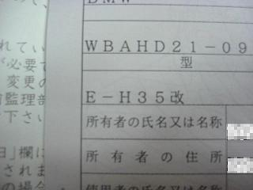 翌日、朝イチで提出＾＾ 「改」のついた車検書を手にすることが出来た。 ロールオーバー効果あり これで堂々とディーラーにも入れる＾＾
|
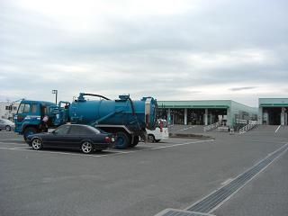 まるまる１日を使い、追突されたりとなかなかハードな１日だった。 今回の申請にあたり、資料を譲っていただきアドバイスいただいたりとSIGさんに大変お世話になった。 SIGさんがいなければ上手くいっていなかったと思う。 また、take-Mのtakeさんにホイールをお借りし、プロの目から意見をいただいたり、 つばめさんやmedama1goさんにアドバイスいただいた。 申請書類の書き方などは、DDさんのHPにある「AT→MT化の改造申請 － まるおさんより」を参考にした。 今回も皆さんのおかげで乗り切ることが出来た。 ありがとうございましたm(__)m
|